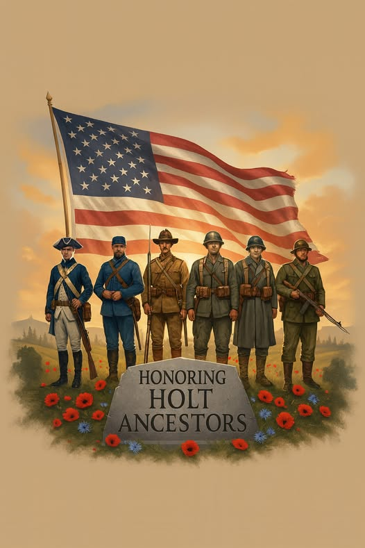
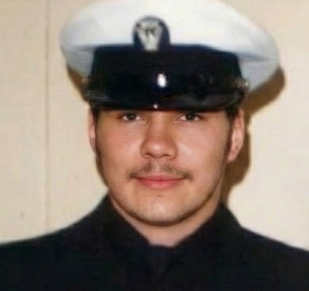

As we look toward the future, we take a moment to reflect on the incredible legacy of service and courage that runs through the very veins of our family history. We should all feel an immense sense of pride knowing that our Holt Universe has been shaped by the sacrifices of veterans spanning nearly the entire history of our country.
From the earliest fight for liberty in the American Revolutionary War and the defense of our young nation in the War of 1812, our ancestors stood up for what they believed in. They carried that spirit through the Mexican–American War and faced the profound divisions of the American Civil War — fighting on both sides — for their principles.
Later generations answered the call in conflicts around the globe: in the Spanish–American War, the trenches of World War I, and during the defining struggle of the World War II generation. Their strength paved the way for those who served in the frozen battles of the Korean War and the complex challenges of the Vietnam War. Post-Vietnam, there are a number of brave men and women who have also served in various capacities at home and abroad.
Every single one of these veterans — our great-great-grandparents, grandparents, aunts, uncles, and cousins — contributed to the freedom and opportunities we enjoy today. Their bravery is a foundational part of who we are.
We are the descendants of true American patriots.

The Legacy Continues — Barrett's Service
Barrett himself carries this tradition forward as a United States Navy Corpsman who served with aircraft carrier duty — the most demanding and storied platform in the modern Navy. Hospital Corpsmen are the combat medics of the Navy and Marine Corps, trained to serve under fire. Barrett's service is the living continuation of a family legacy that stretches back to the Revolutionary War.

The Record of Service
A conflict-by-conflict account of the Holt family's documented military involvement across American history.
IN HONOR OF ALL WHO SERVED
"Every single one of these veterans — our great-great-grandparents, grandparents, aunts, uncles, and cousins — contributed to the freedom and opportunities we enjoy today. Their bravery is a foundational part of who we are."
— Barrett Holt